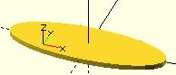

An ellipse can be created from a circle by using either scale() or resize() to make the x and y dimensions unequal. See OpenSCAD User Manual/Transformations

equivalent scripts for this example resize([30,10])circle(d=20); scale([1.5,.5])circle(d=20);
Created with the Personal Edition of HelpNDoc: Write EPub books for the iPad